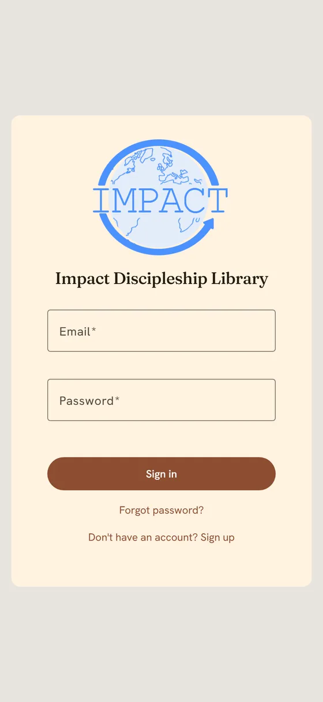
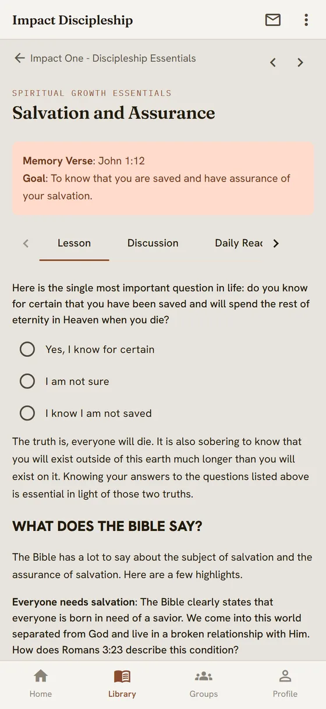

Getting started
Five steps, start to finish: get the app, create your account, sign in, find your book, and start reading. Everything else in the app is covered by the Guide that travels with it.
Your login is an email address. Not a username or a phone number. Use a real address you can open — it is how you set your password, how you get it back if you forget it, and how a group leader invites you.
There are two ways in, and they are the same library with the same books, highlights and answers. Pick whichever suits the device in your hand.
Android phone or tablet
Open the Play Store, search for Impact Discipleship Library, and tap Install. Works offline once your lessons have loaded.
Open the Play Store listing →iPhone, iPad, Mac or PC
Nothing to install. Go to the address below and sign in. There is no iPhone app yet — on Apple devices the web version is the library.
library.impactdisciples.com →On a phone browser you can add the page to your home screen from the browser menu, and it opens like an app from then on.
The first screen you meet is the sign-in screen. If you have never used the library before, you do not have an account yet — tap Don't have an account? Sign up at the bottom.
If someone set your account up for you — Impact Disciples staff, or a group leader who bought you a book — you don't sign up. You will get an email asking you to set your password. Open it, choose a password, then come back here and sign in.
No email? Check your spam folder first, then tap Forgot password? on the sign-in screen and we will send a fresh link. Use the same address the account was made with.

Type your email and password and tap Sign in. The library remembers you on that device, so this is normally a once-only step — though it signs you out after an hour of sitting idle, which matters if you read on a shared phone.
What you land on is Home: the lesson you were last reading, the books waiting for you, your streak, and this week's memory verse.
Tap Library in the bar along the bottom. Every book you hold a licence for is on the shelf; tap one to see its units, and tap a lesson to open it.
A book you have not bought will not appear here. If your shelf is empty, you need a licence — buy one in the Store, or ask your group leader, who can assign you one.
Once a lesson is open, the arrows at the top move you to the previous or next lesson without going back to the list.
A lesson is read straight down the screen. Two things make it yours:
Longer lessons are split across tabs — Lesson, Discussion, Daily Reading — with the memory verse and the goal pinned at the top. Prefer to speak than type? Tap the microphone in an answer box and dictate.

That is everything you need to start reading. The library does more, and every one of these has a full write-up in the Guide — this is just so you know it is there.
Buy a licence for a book, redeem a coupon code, or open one of the free eBooks.
Guide → For Everyone → Buying a book license
Find a group near you and ask to join, or start one and lead it — with group chat, prayer requests, and licences you can hand to members.
Guide → For Members, and For Group Leaders
Announcements from Impact Disciples, and one-to-one messages with people in your group.
Guide → For Everyone → Messages and announcements
Dark mode, colour theme, the language your lessons are shown in, and notifications.
Guide → For Everyone → Settings and appearance
Lessons you have opened stay readable with no signal, and your answers and highlights sync when you are back online. Buying and groups need a connection.
Guide → For Everyone → Using the app offline
Change your password, your name, or delete your account and everything in it.
Guide → For Everyone → Your account and privacy
The Guide is inside the app under Profile → Help, and on the web at library.impactdisciples.com/guide. It is written for three kinds of reader, and there is a find-by-screen index for when you are looking at something and just want to know what it does.
Signing in, reading lessons, buying a book licence, and the settings everyone shares.
Finding a group, joining it, and taking part once you are in.
Starting a group, buying licences in bulk, handing them out, and running it week to week.